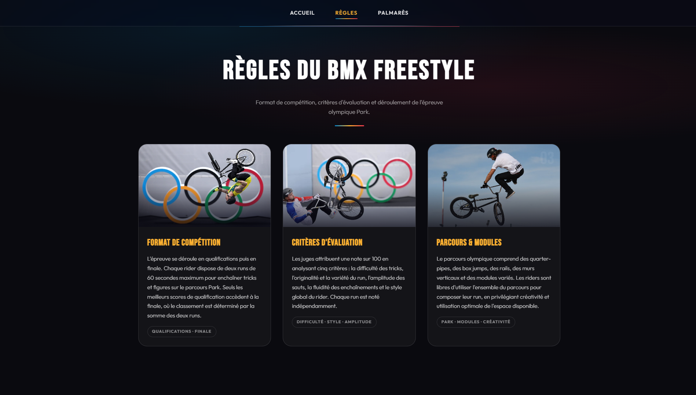
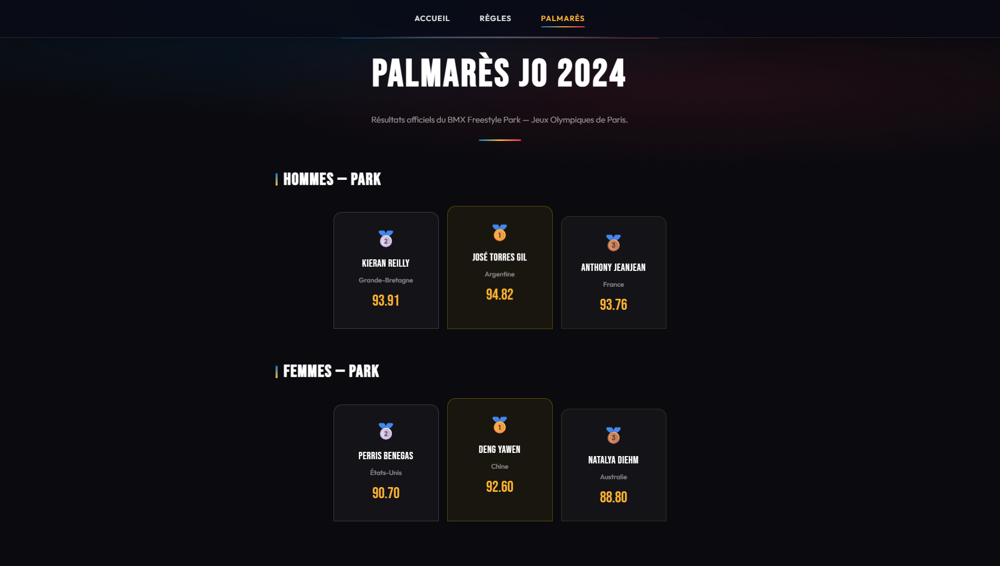

HTML · CSS · Site vitrine
BMX Freestyle JO
Site vitrine thématique autour du BMX Freestyle aux Jeux olympiques de Paris 2024, réalisé selon un cahier des charges pour une vitrine simple : accueil, règles de l’épreuve et palmarès.
01 — Cahier des charges
Une vitrine simple et claire
Le site a été conçu à partir d’un cahier des charges pour site vitrine : présenter l’épreuve, ses règles et les résultats officiels, sans fonctionnalités complexes.
Périmètre retenu : navigation légère entre quelques pages statiques, contenu lisible et identité visuelle sombre inspirée de l’univers olympique (projet pédagogique, sans revendication de marques officielles).

02 — Contenu
Règles et palmarès JO 2024
La page Règles détaille le format de compétition, les critères d’évaluation des juges et les modules du parcours Park.
La page Palmarès affiche les résultats officiels hommes et femmes du BMX Freestyle Park — Jeux olympiques de Paris 2024.

03 — Technique
Intégration statique
Projet structuré en pages HTML, feuilles CSS modulaires (base,
home, pages) et assets (images, vidéo de fond), avec une
navigation commune en JavaScript léger.
-
BMX-FREESTYLE
-
assets
-
images
- abc.png
- jo.png
- regle1.png
- regle2.png
- regle3.png
-
videos
- bg.mp4
-
images
-
css
- base.css
- home.css
- pages.css
-
js
- nav.js
-
pages
- palmares.html
- regles.html
- index.html
-
assets
- Pages Accueil, règles et palmarès — parcours vitrine court.
- CSS Thème sombre, cartes et mise en page responsive.
- CDC Livrable aligné sur un cahier des charges site vitrine.
Arborescence HTML, CSS, assets images et vidéo
04 — Résultat
Site vitrine opérationnel : contenu olympique BMX Freestyle, intégré en HTML/CSS.